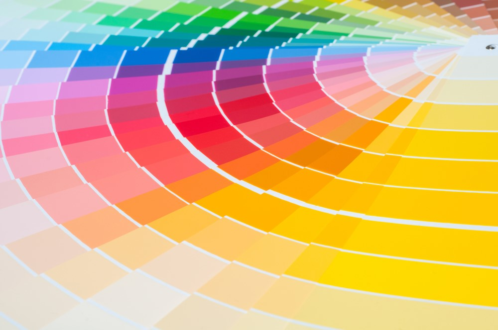

| Reino | Animalia |
| Filo | Arthropoda |
| Classe | Malacostraca |
| Subclasse | Hoplocarida |
| Ordem | Stomatopoda |
Informações gerais
Odontodactylus scyllarus
Fatos interessantes:
Da sua visão:
Esses animais possuem o mais complexo sistema de visão de cores do mundo animal, pois enxergam 12 cores primárias, correspondentes aos 12 pigmentos distintos presentes em sua retina.
Como cada cone pode ver cerca de 100 cores, os estomatópodes são capazes de ver 1024 cores, ou seja, 1 septilhão de cores. Em comparação, o olho humano vê 106 cores, ou seja, 1 milhão de cores apenas. A visão dos estomatópodes é sensível à luz ultravioleta, mas ainda é desconhecido se ela pode distinguir a luz infravermelha.
Do seu soco poderoso:
São capazes de enfiar um murro a uma velocidade superior aos 80 km/h. Este é o murro mais rápido anotado de qualquer animal existente, com mais de 1500 N de força. A superfície dos seus apêndices que desferem os punhos são cobertos com uma camada extremamente densa de hidroxiopatite, disposta de uma maneira muito resistente à possibilidade de fracturar.